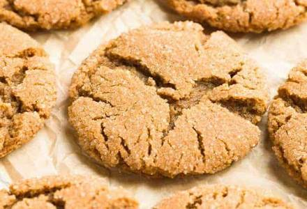

Gingersnap Cookies
- 2 1/4 cups all-purpose flour
- 1 cup packed brown sugar
- 3/4 cup shortening or cooking oil
- 1 egg
- 1 tsp baking soda
- 1 tsp ground ginger
- 1 tsp ground cinnamon
- 1/2 tsp ground cloves
- 1/4 cup sugar
- In a mixing bowl, combine about HALF of the flour, the brown sugar, shortening, molasses, egg, baking soda, ginger, cinnamon, and cloves.
- Beat with an electric mixer on medium to high speed till thoroughly combined. Beat in remaining flour.
- Shape dough into 1-inch balls and roll in sugar. Place 2 inches apart on an ungreased cookie sheet.
- Bake in a 375° oven for 8-10 minutes or till set and tops are crackled. Cool cookies on a wire rack. Makes about 48 cookies.
After they cool, make sure to store in an airtight container to maintain their softness.